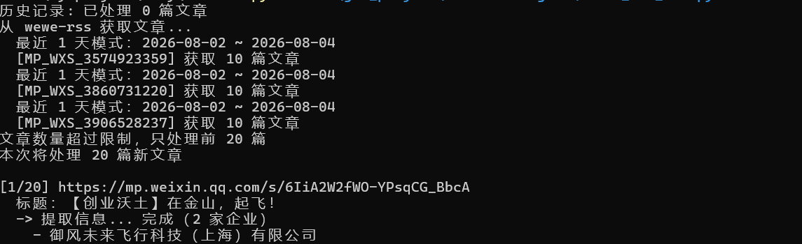
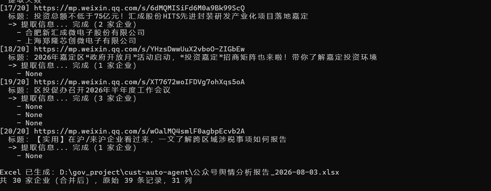
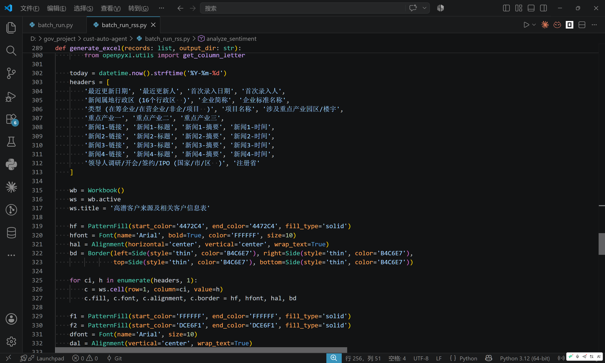
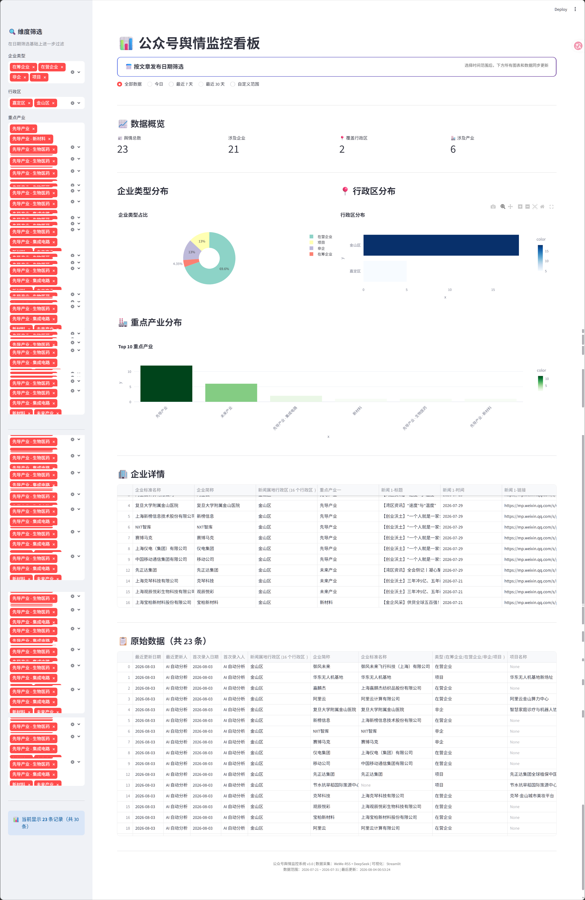

📡
WeWe-RSS
Docker 部署，自动抓取
基于 WeWe-RSS + DeepSeek + Streamlit 的全链路数据采集与分析平台
Contents · 目录
为什么需要这个系统？
四层架构，全链路打通
WeWe-RSS + Docker 容器化
DeepSeek 一次调用完成多企业提取
Streamlit 交互式数据看板
工程能力与问题解决
Section · 01
政府舆情监控面临的三大挑战
Problem · 痛点
Section · 02
四层架构，从数据到洞察
Architecture · 系统架构
Docker 部署，自动抓取
WeWe-RSS 独立部署
Windows Task Scheduler
企业信息结构化提取
严格 31 列 JSON 输出
一篇新闻多家企业
31 列结构化输出
持久化 + 去重机制
URL 去重，增量采集
交互式 Web 看板
动态图表渲染
行政区/产业/日期
Pipeline · 数据流程
公众号订阅
Python 脚本
AI 分析
31 列报告
可视化看板


Section · 03
一次 API 调用，完成多企业结构化提取
Core · 核心能力
一篇新闻提到多家企业时，自动为每家企业生成一条记录，确保信息不遗漏。
严格对应用户提供的 31 列 Excel 模板，覆盖企业信息、地理分布、产业分类、领导人活动等维度，满足政府招商分析需求。

Dashboard · 可视化看板
舆情总数
3 个公众号采集
涉及企业
自动识别提取
覆盖行政区
金山·嘉定·浦东
涉及产业
动态统计

Highlights · 技术亮点
MySQL + WeWe-RSS 双容器编排，docker-compose 一键部署，环境隔离，数据持久化。
Prompt 工程设计，一次 API 调用完成多企业结构化提取，输出严格 31 列模板。
JSON 历史记录 + 时间窗口过滤，只处理新文章，避免重复分析和 API 浪费。
无前端经验，用 Streamlit + Plotly 构建交互式 Web 看板，动态筛选 + 图表联动。
31 列标准化 Excel 报告，覆盖企业、地理、产业、领导人活动等维度，可直接用于招商决策。
RSS 失败时支持手动 URL 输入，文章抓取失败自动跳过，保证系统稳定性。
全链路自动化，从数据采集到智能分析到可视化展示